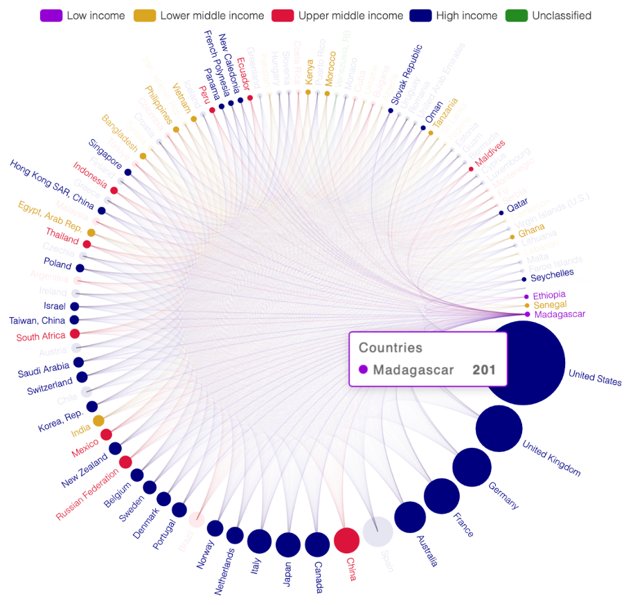
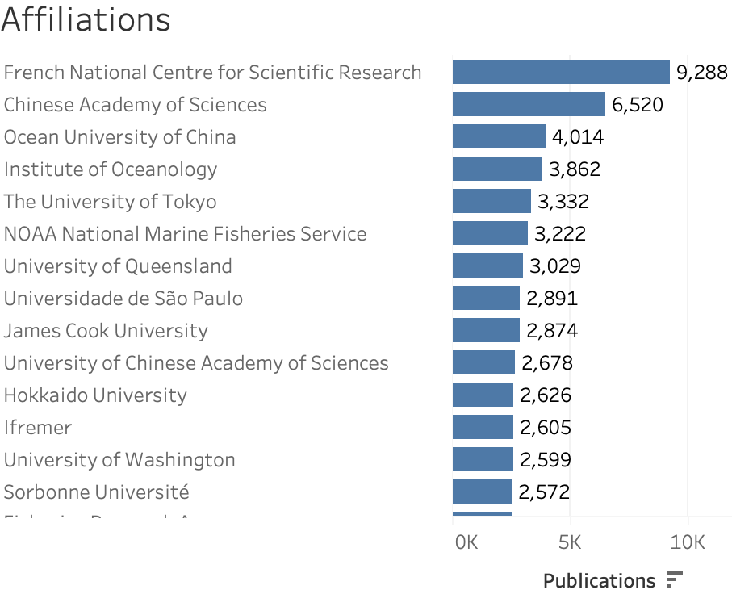
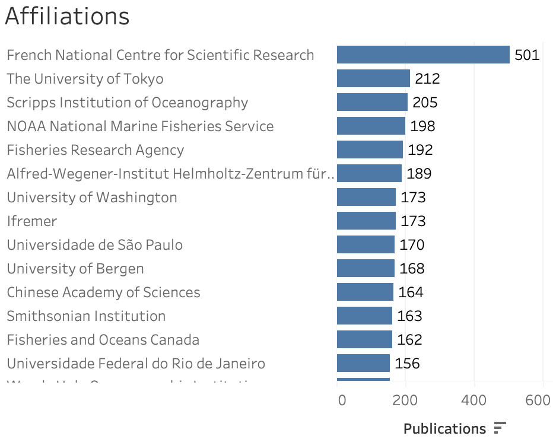
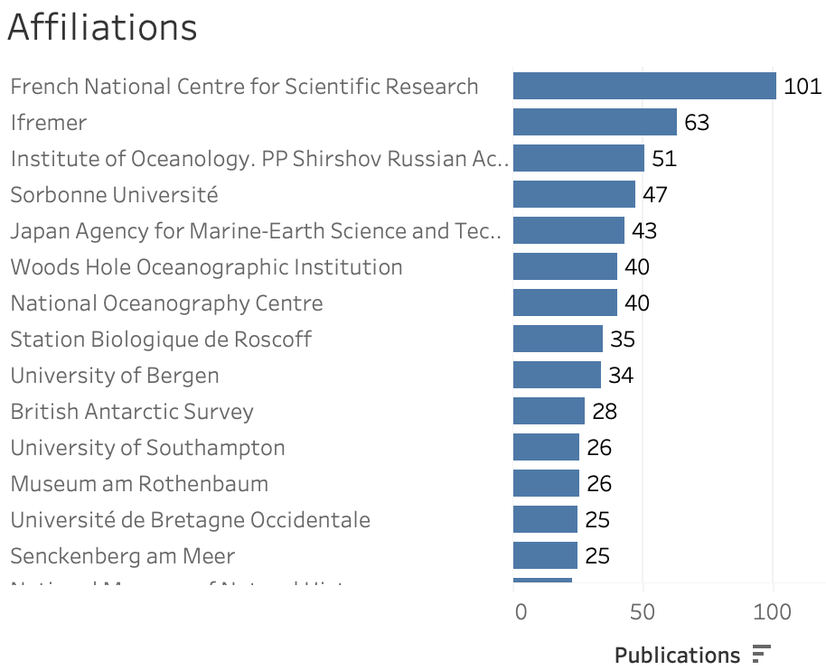
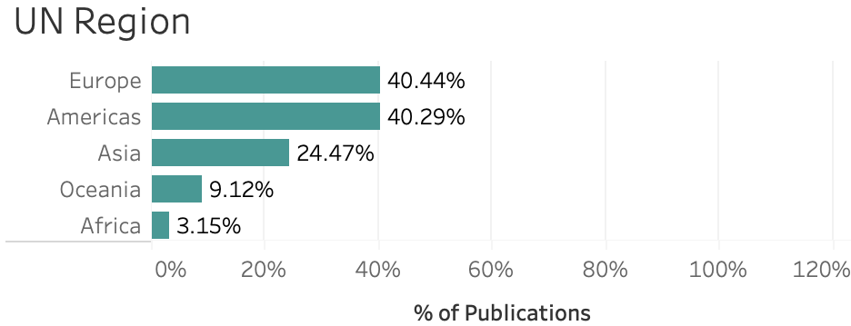
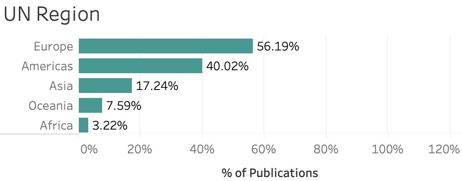

Study on Marine Genetic Resources
Preface
This is an electronic version of several chapters from “Study on ‘Marine Genetic Resources’ Market Value and State of the Art of Commercialisation of Related Products in the Context of the BBNJ Negotiations” conducted for the European Commission. The full report is available here should be considered the official version of this document. The full report should be cited as:
Paul Oldham, Jasmine Kindness, Emmanuel Davidson, Amelia Westmoreland, Thomas Vanagt and Marcel Jaspars. Study on ‘Marine Genetic Resources’ Market Value and State of the Art of Commercialisation of Related Products in the Context of the BBNJ Negotiations. Publications Office of the European Union, 2025
Executive Summary
In 2023 a groundbreaking international treaty on the conservation and sustainable use of biodiversity of Areas Beyond National Jurisdiction was adopted by the United Nations. This so-called High Seas Treaty or BBNJ Agreement consists of four main chapters respectively on: Marine Genetic Resources (MGR) and the fair and equitable sharing of benefits; area-based management tools; environmental impact assessments; and capacity building and transfer of marine technology.
In order to support future discussion on modalities of monetary benefit-sharing (Art. 14.7 of the Treaty), a more accurate picture is needed of the actual and potential value of MGR of ABNJ. The most recent comprehensive study dates back to 2014.
ABS International, in collaboration with One World Analytics and the University of Aberdeen, has developed a methodological plan for conducting a comprehensive MGR market analysis in ABNJ.
This analysis has three primary objectives:
- Mapping marine scientific research on MGR of ABNJ (Deliverables 1 and 2).
- Analyzing the market value and commercialization potential of MGR of ABNJ through scientific and patent assessments (Deliverable 3).
- Proposing regulatory frameworks for the equitable distribution of monetary benefits derived from MGR of ABNJ utilization (Deliverable 4).
Task 1 (Deliverables 1 and 2) delves into the data surrounding the scientific field of MGR. It begins with an extensive look at the difficulties in defining the scope of marine research. The discussion then gradually shifts towards specific areas like marine biodiversity and deep-sea studies. The overarching goal of this exploration is to place the research on MGR of ABNJ in a broader scientific context.
Task 2 (Deliverable 3) gives an overview of patent activities related to any organism classified in OBIS as existing in a marine environment. This task not only examines the overall patent landscape but also delves into various perspectives, including a focus on those categorized specifically as “ABNJ only.”
Deliverables 1-3 are bundled in this report as Part I.
In Task 3 (Deliverable 4 – Part II in this report), the results from the first two tasks are used to assess the value of MGR of ABNJ products on the market. We also look at the different regulatory options for monetary benefit-sharing, and use the value data to estimate the potential yield of the different monetary benefit-sharing options.
Task 1: Mapping marine scientific research on MGR of ABNJ
Publications and funding: Marine Biodiversity – General Overview
Information considering 116 million records belonging to marine, brackish, freshwater, or terrestrial environments was compiled. Further analysis revealed that there are 153,810 “marine only” organisms recorded, predominantly at the species level (134,185), with fewer recorded at the genus (14,592) and family (1,902) levels.
A detailed examination of the ‘marine only’ dataset from the taxonomic perspective highlights the predominance of the kingdom Animalia, particularly emphasizing mollusks and arthropods. Further, some of the most mentioned species in the literature on MGR are: the diatom Phaeodactylum tricornutum, the seagrass species Posidonia oceanica and the unicellular alga Dunaliella salina, the edible sea lettuce Ulva lactuca, and Cenarchaeum symbiosum, which has a symbiotic relationship with marine sponges. Viruses are under-represented, with only a couple listed, including the economically significant White Spot Syndrome Virus. Protozoa like Centropyxis aculeata and Neoparamoeba pemaquidensis, although less frequent, were also detected as a part of the study.
Examination of historical trends demonstrates a discernible increase in the number of publications starting from the early 20th century, with a significant surge occurring from around the 1960s onwards. Analysis of the disciplines attached to the highest number of publications presented biology and ecology as the dominating fields, an expected ranking given their direct relevance to marine biodiversity. Applied sciences like fisheries, genetics, and biochemistry follow closely behind. Regarding geographical relevance, the data on publication numbers by UN regions highlights the Americas and Europe as the top contributors, each accounting for approximately 33% of the total publications. Together, these regions constitute nearly two-thirds of the global output, indicating a significant concentration of scholarly activity. Asia follows closely behind with 25% of the total publications, while Oceania and Africa contribute smaller fractions, representing 6% and 3% respectively.
The United States, China, and Japan lead in publication counts, indicating significant investment and interest in marine biodiversity research. European countries like Germany, the United Kingdom, and France also contribute substantially. The French National Centre for Scientific Research stands out at as the top institution, however, is closely followed by The Chinese Academy of Sciences and the Ocean University of China in the top three rankings, highlighting China’s investment in research. This is further supported by China’s lead in marine research funding followed by the United States, Japan, Republic of Korea, and the European Union, highlighting significant investment in marine research by these countries. Only 11.6% of publications within the marine dataset mention funding information, indicating a low level of transparency in research funding. Funding disclosure in marine biodiversity publications has shown a gradual increase since the early 1990s, peaking in 2016, but displaying some fluctuations thereafter.
In relation to the commercial aspect, analysis of the scientific literature shows that there is clear evidence, albeit at a low level, of commercial research on ABNJ organisms in the scientific literature. This is particularly in respect to the genetic and chemical properties of organisms. However, commercially focused research appears to constitute a small part of the wider research effort. In reality, applied research is presently a subset of research activity in ABNJ.
Publications: Marine biodiversity from ABNJ
The interim working definition of ABNJ demonstrates a difficulty in discriminating with certainty between research conducted in ABNJ and work conducted inside the EEZ. As such, a methodology was developed to incorporate weighted criteria within the scope of the working definition of ABNJ to mediate this challenge. This weighted scoring system serves to assess the likelihood that organisms or features are located within ABNJ. Weighted parameters include underwater features, ocean names, and depth criteria. For example, an organism that is recorded exclusively in ABNJ is assigned a higher probability score than those found in multiple environments. The sum of all of these criteria then allows species to be sorted by level. For the purpose of this summary, priority is given to the higher levels (4 & 6), as those are more likely to incorporate exclusivity for ABNJ.
Likely from ABNJ (Level 4)
In the present study, 5.5% of the entire marine dataset analyzed is classified as “Level 4.” Among the most researched species at this level are North Atlantic-dwelling copepod Calanus finmarchicus, the Antarctic krill Euphausia superba, red seabream Pagrus major as a commercially important fish species, the Norwegian lobster Nephrops norvegicus and Caribbean spiny lobster Panulirus argus.While biology and ecology remain the leading disciplines, zoology, geology and oceanography also emerge at the top. The continuous prominence of terms related to fisheries indicates an enduring focus on this area within marine research.
Although country-specific patterns align with the general marine dataset above, as the scope of the dataset is narrowed within this section from the broader marine biodiversity search, China’s prominence decreases. Institutions like the University of Tokyo (Japan), Scripps Institution of Oceanography (USA), University of Bergen (Norway), and University of Washington (USA) rise in rankings, indicating a shift in research prominence (Fig. 1). Additionally, the United Nations regions’ analysis shows Europe surpassing the USA, as research focus narrows to ABNJ, evidenced by a higher publication share.
Very Likely from ABNJ (Level 6)
Level 6, which accounts for a mere 0.3% of the overall marine dataset analyzed indicating low-level research activity as the likelihood of exclusivity to ABNJ increases. Within this level, taxonomic focus narrows to specific species, including Antarctic krill, blind shrimp like Rimicarisexoculata, the mollusc Bathymodiolus azoricus, and the polychaete worm Alvinella pompejana. Other notable organisms include the abyssal grenadier fish Coryphaenoides armatus and the copepod Calanus finmarchicus. Research publications peaked in 2008 with 61 articles, with a notable increase in mentions of concepts related to hydrothermal circulation and vent systems. France has further secured its position as a significant contributor, with institutions like IFREMER and the French National Centre for Scientific Research leading in publication output (Fig. 1). The US maintains a strong presence, while Europe’s share of activity is on the rise (Fig. 2). Overall, Level 6 marks a transition to more specialized research, with distinct patterns in publication activity and research focus.

General Marine Biodiversity

Level 4

Level 6
Figure 1. Publication Activity by Affiliation at Increasingly Narrow Scope

Level 4

Level 6
Figure 2. Regional Share of Publications at Increasingly Narrow Scope1
Geographical distribution
One of the weighted criteria applied focused on geographical distribution, as our study mapped ABNJ MGR research both vertically (depth) and horizontally (features). This distribution links research data to ABNJ-specific locations and named underwater locations, such as seamounts and hydrothermal vents. The analysis reveals 7,204 publications for marine organisms involving 607 underwater places either in the EEZ or ABNJ. Of these, 89 underwater places were identified as ABNJ-alone involving 2,491 publications.
Collaboration networks
Marine scientific research often encompasses collaboration among researchers from various organizations and countries, and mapping these collaborations helps visualize the dominant actors within the marine research landscape. The present work presents three types of interactive collaboration networks, focusing on: 1) Institutions, 2) Countries, and 3) Funding. Notable observations highlight that collaborations between Low-Income and High-Income countries are prevalent, whereas partnerships among Low-Income countries are rare (see for instance Figure 3).
Figure 3: Example of a network analysis of collaborations (with Madagascar)
Task 2: Analyzing the market value and commercialization potential of MGR of ABNJ through scientific and patent assessments
Patent landscape and market
The analysis encompassing organisms tagged as “marine” in Ocean Biogeographic Information System (OBIS) identified 4,903 organisms within patent data, linked to 53,768 first patent filings from 1990 to 2021, revealing an increasing trend (Fig. 4). One notable influencing aspect of the patent landscape analysis is the geographic distribution of patent activities, with a strong presence in developed countries (the US remains at the very top, followed by the European Patent Office) and emerging contributions from nations like China.
The primary areas of patent activity include biotechnology and genetic engineering, peptides, genetically engineered plants, fermentation, measuring and testing processes, biocides, foods, and cosmetics. Major applicants include large agricultural companies such as Pioneer Hi-Bred International, Monsanto, BASF, and Bayer Cropscience, enzyme producers like Novozymes (now Novensis), and universities such as the University of California. Geographically, the majority of filings occurred in the United States, followed by the European Patent Office, Japan, and other developed countries. Over 50% of filings in major markets such as the United States originated from non-residents, indicating a global interest in seeking patent protection in these regions.
A focused filter on marine-only organisms showed 534 filings in 2017, with a potential decline afterwards, suggesting shifts in country rankings and applicants (Fig. 4). When analyzing species recorded in ABNJ in OBIS that can be found in other locations as well, the activity was found to be less than 500 filings per year and concentrated in pharmaceuticals and biotechnology. This narrowed scope fostered a significant change in applicant rankings, exemplified by Novozymes experiencing a sharp decline in their position based on initial filings. Conversely, Bayer Cropscience ascended to the top ranking, followed by Syngenta Participations in second place, while the University of California consistently maintained its third position, unaffected by the filtering criteria.
A third and narrower filter, analyzing patents involving marine organisms that may exist only in ABNJ showed that patent filing activity was typically under 150 filings per year (Fig. 4). Interestingly, narrowed focus again resulted in a shift concerning applicant rankings, with different subsidiaries of BayerAG taking over the top. Pioner Hi-Bred International is also present among the top 5, whilst University of California ranking sinks down to the 5th position.

Marine Organisms Mentioned

ABNJ Recorded

ABNJ Exclusive
Figure 4: First Filing of Patent Families with Narrowing Scope
With respect to the patent analysis, there are growing references to marine organisms in patent data, as well as to organisms recorded in ABNJ. In a small number of cases, notably Calanus finmarchius as well as the enzymes from Thermococcus 9N, there is evidence of the intent to commercialize explicitly from ABNJ. However, the outputs of this search reiterate the concept that the existence of a patent family does not equate to the existence of a product on the market. Overall, definitive evidence for the collection of organisms from ABNJ that later appear in patent documents remains low in the overall landscape.
Task 3: Proposing regulatory frameworks for the equitable distribution of monetary benefits derived from MGR of ABNJ utilization
Identification of MGR based products that could have come from ABNJ
In Tasks 1 and 2, extensive big data analyses were conducted to understand the current state of play regarding the valorisation of MGR of ABNJ. This involved examining scientific research activities and intellectual property developments related to these resources, resulting in insights into the commercial potential and existing patent landscape. The primary aim of Task 3 was to explore and evaluate different regulatory options for monetary benefit-sharing mechanisms associated with MGR of ABNJ, addressing a key aspect of the BBNJ treaty negotiations, and use the input from tasks 1 and 2 to assess the current state of actual valorisation of MGR of ABNJ.
Several methods were applied to identify if there are currently any products on the market that are derived from MGR of ABNJ: the literature search and patent search from tasks 1&2, a novel method using an AI tool to search a copy of the entire internet (the ‘common crawl’) and manual confirmation of all possible leads. This exercise turned out to be very complex, due to several challenges. First of all, in most cases of historic R&D it is not possible to say with certainty if the target organism was indeed coming from ABNJ or not, as there is no information of the location of the first sample used for the R&D. Therefore, all results, apart from one, in this study should be interpreted as could have come from ABNJ: as a matter of transparency all the products based on MGR that could have originated from ABNJ have been included in the study, even when the likelihood is low according to the available data, and this is specified where possible. A global search also comes with language challenges, which results in a bias in the results towards products that have associated publications in English. When searching for product revenue, companies have no legal obligation to disclose this information. It is therefore impossible to make an accurate assessment of how much the current MGR products on the market generate in yearly revenue, so rough estimations are used.2
It is argued that the introduction of the BBNJ Batch Identifier will play a key role in future assessment of MGR of ABNJ valorisation. The Batch Identifier, in combination with the new WIPO disclosure of origin requirement3 for patent applications, should guarantee that any future product developed from an MGR of ABNJ will be properly documented and reported.
The search for potential MGR products on the market identified nine organisms linked to 74 products that are developed based on MGR that could have come from ABNJ. The total combined estimated revenue of these products is between $400 and $650 million per year, though it is for now impossible to assess with any certainty whether this revenue can be attributed to ABNJ or not. Out of those 74 products, only 1, can be attributed to an MGR of ABNJ with 100% certainty (i.e. the R&D was conducted on an organism collected from a known location in ABNJ and the MGR is fundamental to the product). To the best of our knowledge, none of these products were the result of the use of digital sequence information (DSI) only.
Regulatory frameworks for benefit-sharing: analysis and monetary benefit-sharing estimations
Task 3 presents a comprehensive analysis of regulatory options for monetary benefit-sharing associated with MGR of ABNJ. Building upon previous tasks that analysed the current state of MGR valorisation, this task delves into the complex issue of ensuring fair and equitable sharing of benefits derived from MGR. The study identifies and evaluates different monetary benefit-sharing mechanisms, aiming to provide substantive support for future negotiations at the BBNJ Conference of the Parties (COP).
The analysis identified several potential monetary benefit-sharing modalities, which were divided into coupled and decoupled options. Coupled options, where benefits are directly linked to the financial success of commercialized products, include royalties on sales, milestone payments, profit sharing, and licensing fees. Decoupled options, where benefits are not directly tied to the success of utilization, include fixed access fees, annual licensing fees, flat contribution mechanisms, subscription models, membership fees, and a micro-levy on proxy parameters like equipment or vessel usage.
Using a decision matrix based on different sets of criteria, a decision was made to focus further work on milestone payments, revenue-based payments, a decoupled fee-based system, and a potential micro-levy. The first two options are explicitly listed in Article 14.7 of the BBNJ treaty, while decoupled options were selected based on their feasibility and potential for broad applicability and sustainability. The integration of a tiered fee structure was also considered to tailor financial contributions to reflect varying capacities and impacts of different users, ensuring a fair and balanced system.
The analysis of coupled payment options for monetary benefit-sharing of MGR of ABNJ revealed both potential revenue and significant challenges. Revenue-based payments and milestone payments were identified as possible mechanisms; however, their effectiveness is contingent on the commercial success of MGR-derived products. Applying a 1% revenue-based payment to the estimated market value of $400 million could generate approximately $4 million annually, and up to $6.5 million at the higher market value estimate of $650 million per year. It is important to note that this revenue (1) is linked to products using MGR that could have come from ABNJ and (2) are the result of past utilization, and therefore potentially outside the scope4 of the BBNJ Treaty.
Despite their potential, these coupled payment mechanisms pose challenges, including the need for robust tracking and administrative systems to monitor financial flows and ensure compliance. This requirement could impose substantial burdens on users and regulators, complicating implementation and management. Additionally, the variable nature of commercial success in the biotechnology sector could result in unpredictable revenue streams, potentially undermining the stability and reliability of the benefit-sharing fund. We also highlighted that milestone payments would only realistically be possible for pharmaceutical products and would come with significant downsides. Finally, the current international and national financial reporting obligations do not offer the tools to identify revenue at product level.
The evaluation of decoupled payment options for monetary benefit-sharing highlighted the flexibility and predictability these mechanisms offer. Fixed annual fees, for instance in the shape of an annual licensing fee or membership fee, could distribute the financial burden across a broader user base. For example, using publication and patent data as proxies to identify who has research and commercial interests in MGR of ABNJ respectively, a decoupled fee system could generate between $4 and $6 million USD per year. We did not find a suitable way to implement a micro-levy.
Decoupled mechanisms also present challenges. While they could provide a steady revenue stream, they may not fully capture the value from high-profit activities, potentially leading to fairness issues. Furthermore, these mechanisms require careful calibration to ensure they are equitable and do not disproportionately impact certain users and thus hamper R&D. The predictability and broader participation of decoupled payments make them attractive, but their implementation must be carefully designed to balance equity and effectiveness. The BBNJ batch identifier could help with more reliably determining the non-commercial and commercial actors active in the MGR of ABNJ space
Recommendations
Framework and mechanism development for monetary benefit-sharing
Balance costs and revenue: any benefit-sharing system comes with a setup and a maintenance cost. Also the latter should be carefully evaluated before taking a final decision on monetary benefit-sharing modalities. This includes not only the costs at multilateral level, but also the possible costs for national implementation and operation;
If a monetary benefit-sharing system in line with Art 14.7 is to be established, incorporate a fee structure using bands: defining bands for payment levels according to size (e.g. large corporations versus Small and Medium-sized Enterprises) and type of utilization (e.g., commercial entities, research institutions), but also jurisdiction, will help to ensure fair financial contributions across the different users;
Consider a hybrid model for monetary benefit-sharing: since none of the studied monetary benefit-sharing options came without clear shortcomings, a combined coupled mechanism with a decoupled mechanism could be considered;
Leverage the BBNJ Batch Identifier as proxy indicator: a properly implemented BBNJ batch identifier should create the most suited proxy indicator for a possible decoupled mechanism, and will help with compliance checking and enforcement of a possible coupled solution.
Alignment with other Genetic Resource frameworks
Alignment with national ABS legislation and the Nagoya Protocol: further clarification would be welcome on the application of Art. 11.3, especially considering the potential ‘stacking’ of obligations, including monetary benefit-sharing, related to MGR from Areas Beyond National Jurisdiction and from coastal state’s EEZ;
Alignment with the CBD Cali Fund: explore the options to harmonize the Digital Sequence Information (DSI) monetary benefit-sharing of the BBNJ Treaty with the DSI multilateral mechanism as agreed during the CBD COP16 in Cali (November 2024) . Art. 1c and 27 of the Annex to decision CBD/COP/16/L.32/Rev.1 explicitly invite collaboration between multilateral DSI mechanisms.
Stakeholder involvement
Interaction with users: a dialogue with representatives of different types of users is highly recommended. For commercial users, this would entail the following sectors, amongst others: pharmaceuticals, industrial biotech, green biotech and cosmetics. For non-commercial users, collectors, users and curators of MGR should be consulted. We would also vouch to interact with representatives of Small and Medium-sized Enterprises;
Role for civil society: civil society actors, such as NGO’s and IGO’s, could be consulted for ideas around fund disbursement.
Global cooperation and capacity building
Support developing countries in implementation: provide financial and technical assistance to developing countries for participation in and compliance with benefit-sharing mechanisms, ensuring equity in global collaboration;
Strengthen international collaboration: work with WIPO, patent offices, and regional organizations to enforce geographic origin disclosures and ensure alignment of the new WIPO Treaty on Intellectual Property, Genetic Resources and Associated Traditional Knowledge with the BBNJ treaty.
Policy refinement and long-term strategies
Facilitate pilot testing of mechanisms: conduct pilot studies to test monetary benefit-sharing systems across different user groups to identify operational challenges and refine frameworks;
Introduce regular evaluations: establish periodic reviews of monetary benefit-sharing mechanisms to adapt to evolving market dynamics and ensure sustained compliance with treaty objectives;
Futureproofing: consider the commissioning of a study on the long-term trends in MGR research & development in order to validate the futureproofing of the monetary benefit-sharing mechanism;
Encourage voluntary contributions: encourage contributions through the voluntary mechanism for commercial and non-commercial actors to promote additional support for benefit-sharing efforts.
Sustainability and accountability
- Promote transparency in fund allocation: ensure that funds generated through the benefit-sharing mechanism are transparently allocated to capacity building, conservation projects, and other treaty objectives, reinforcing trust among stakeholders.
A single record may include multiple countries, which can cause the percentage shares by region and sub-region to add up to more than 100%.↩︎
See methodology↩︎
WIPO Treaty on Intellectual Property, Genetic Resources, and Associated Traditional Knowledge, adopted on May 24 of 2024 https://www.wipo.int/treaties/en/ip/gratk/↩︎
Depending on their origin, as they could come from areas within national jurisdiction, and the potential application of the retroactivity clause of the BBNJ Treaty↩︎